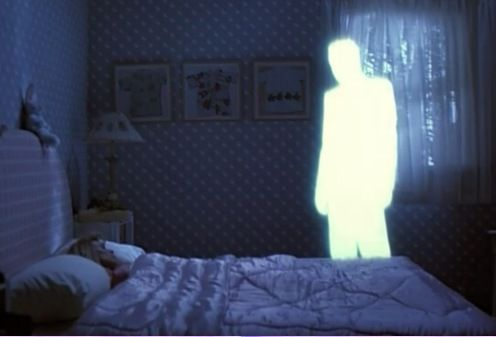

"And I was running far away
Would I run off the world someday?
Nobody knows, nobody knows
And I was dancing in the rain
I felt alive and I can't complain."
- Runoway;Aurora.
¿QUE ES EL SHIFTING?
Shifting Realities (Cambio de Realidades): Es un concepto más contemporáneo en internet,que implica imaginar o "experimentar" cambios a otras realidades o universos alternativos
en la mente durante momentos de relajación o meditación.
Meditación guiada:
Los participantes suelen seguir audios o guías visuales
para imaginar un cambio a otra realidad.
Enfoque en la imaginación:
La práctica se centra en la habilidad de visualizar y
sentir la presencia en una realidad alternativa.
No conocemos la naturaleza de nuestro subconsciente. La ciencia dice que es probable que
el multiverso exista.Por lo tanto, el shifting puede ser real.
La proyección astral es real, probada por la ciencia.
Puedes shiftear desde el plano astral; Por lo tanto, no es descabellado
creer que el shifting es real.
Como su nombre lo indica, es la práctica de cambiar tu realidad. Sin embargo, generalmente se define
como “viajar con tu subconsciente”, pero eso es incorrecto. En primer lugar, no viajas, porque no hay
espacio entre realidades y no mueves tu subconsciente, porque eso implicaría que te
quedas inconsciente en otra realidad.
